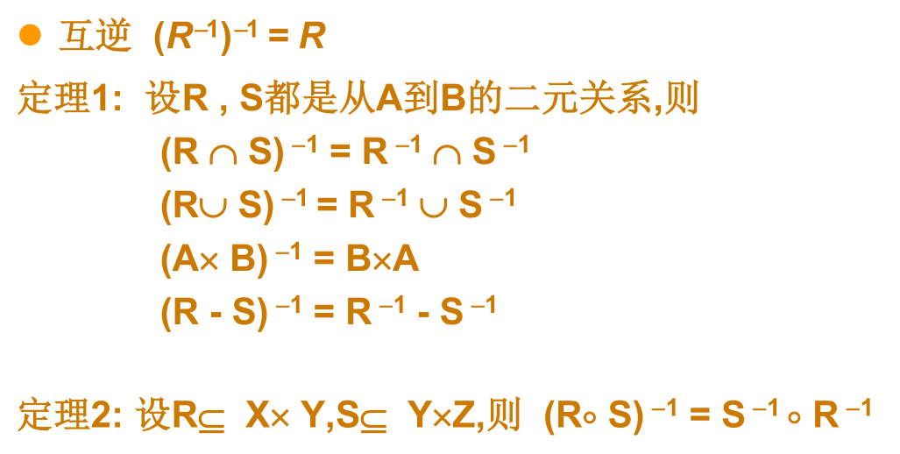
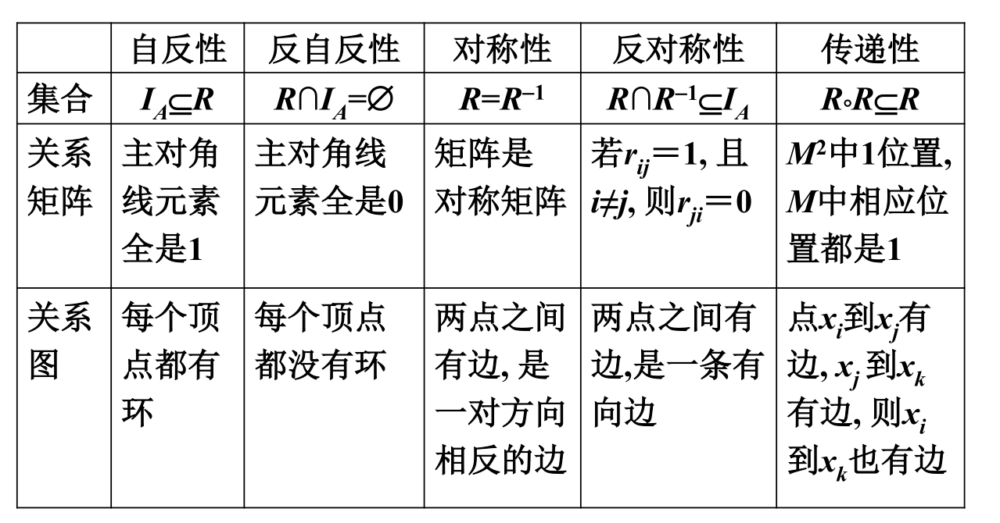
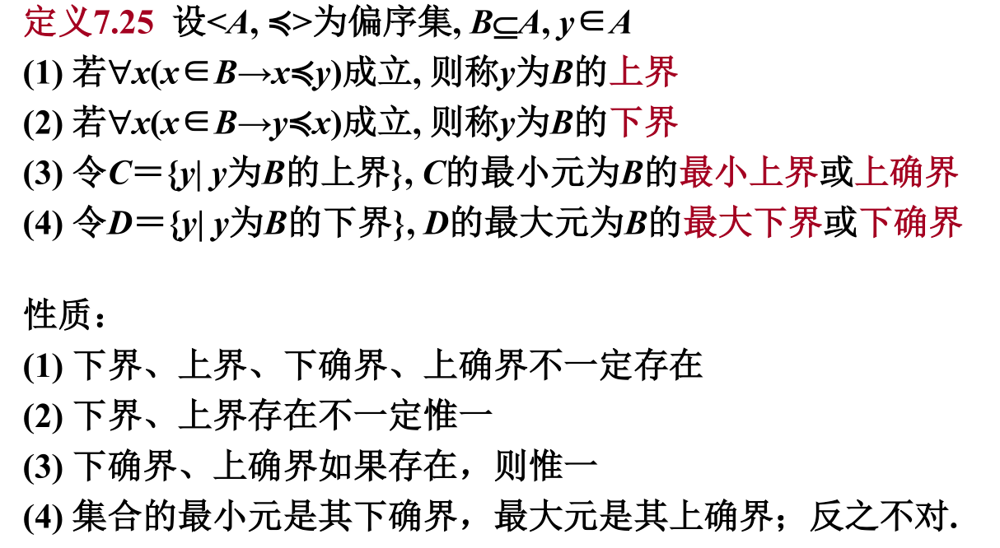

集合
互异{1,2,3,3,3}={1,2,3} 本书中规定集合的元素是集合 A⊆B ⇔∀x (x∈A→x∈B) A=B ⇔ A⊆B∧B⊆A A⊂B ⇔ A⊆B∧A≠B A⊈B ⇔ ∃x (x∈A∧x∉B)
空集 ∅：不含有任何元素的集合。 空集是任何集合的子集。 ∅ 是惟一的 ∅≠{∅}
n元集：含有n个元素的集合
幂集：P(A)={ x | x ⊆ A }
全集 E ：包含了所有集合的集合 全集具有相对性：与问题有关，不存在绝对的全集
A∪B = {x | x∈A∨x∈B} A∩B = {x | x∈A∧x∈B} 相对补 A−B = {x | x∈A∧x∉B} 对称差 A⊕B = (A−B)∪(B−A) 绝对补 ∼A = E−A A ⊆ B ⇔ A−B = ∅ A∩B = ∅ ⇔ A−B = A
广义并 ∪A = { x | ∃z ( z∈A ∧ x∈z )} 元素的元素构成的集合 ∪∅=∅
广义交 ∩A = { x | ∀z( z∈A → x∈z )} 所有元素的公共元素构成的集合 ∩∅无意义
单元集{x} 的广义并和广义交都等于x
并，交，相对补，对称差 优先顺序由括号确定 广义，幂集，绝对补，运算由右向左进行 第二行的运算优先

有序对
由两个元素 x 和 和 y ，按照一定的顺序组成的二元组 <x,y>=<u,v> ⇔ x=u∧y=v
笛卡尔积
设A,B 为集合， A×B = {<x,y>| x∈A∧y∈B}
二元关系
如果一个集合满足以下条件之一： (1) 集合非空, 且它的元素都是有序对 (2) 集合是空集 则称该集合为一个 二元关系, 简称为关系，记作R. 如果<x,y> ∈R, 可记作xRy ；如果<x,y>∉R, 则记作x反斜杠Ry
设A,B 为集合, A×B 的任何子集所定义的二元关系叫做 从A到B 的二元关系, 当A=B 时则叫做A上的二元关系 若A和B的元素数量分别为m和n，AxB的元素数量为mn，二元关系数量为2
以下是A上的各种关系 对于任何集合A，空集∅是A x A的子集，叫做A上的空关系
全域关系
恒等关系
小于等于关系
（A 为实数子集）
整除关系
（A 为非0 整数子集）
包含关系
（A是集合族）
R 的关系矩阵是布尔矩阵 又称为R的邻接矩阵
布尔矩阵的并和交运算
对应元素作并和交
布尔矩阵的积运算
关系图 若A= {x 1 , x 2 , …, x m } ，R 是从A 上的关系，R 的关系图是G R =<A, R>, 其中A 为结点集，R 为边集. 如果<x i ,x j > 属于 关系R ，在图中就有一条从 x i 到 到 x j 的有向边.
关系的 定义域 、 值域 与 域 分别定义为 domR = { x | ∃y (<x,y>∈R) } ranR = { y | ∃x (<x,y>∈R) } fldR = domR ∪ ranR
关系的逆运算
关系矩阵作转置

关系的合成运算
R ° S = { <x, z> | ∃y (<x, y>∈R ∧ <y, z>∈S) }
合成运算的关系图形式
左边标R的定义域，中间标R的值域和S的定义域的并，右边标S的值域，完成R和S的关系图绘制，找从左到右的通路
合成运算的关系矩阵形式
矩阵作积运算
关系的幂运算
设R 为二元关系, A 是集合 (1) R 在A 上的 限制 记作 R ↾ A, 其中R ↾ A = { <x,y> | xRy ∧x∈A } (2) A 在R 下的 像 记作R[A], 其中R[A]=ran(R ↾ A) R 在A 上的限制 R ↾ A 是 R 的子关系，即 R ↾ A ⊆ R A 在R下的像 R[A] 是 ranR 的子集，即 R[A]⊆ ranR
逆运算优先于关系运算优先于集合运算
自反/反自反关系
<x,x>都在/都不在 设 R 为A 上的关系, (1) 若 ∀x(x ∈A→<x,x>∈R), 则称 R 在 A 上是 自反的 (2) 若 ∀ x(x ∈A→<x,x>∉R), 则称 R 在 A 上是 反自反的
A上的全域，恒等，小于等于，整除，包含关系都是自反关系 A上的小于关系和真包含关系都是反自反关系
对称/反对称关系
<x,y>在<y,x>就在/不存在<x,x> 若∀x∀y( x,y ∈A∧<x,y> ∈R→<y,x> ∈R), 则称 R 为 A 上 对称关系 若∀x∀y( x,y ∈A∧<x,y> ∈R∧<y,x> ∈R→x=y), 则称 R 为A 上的 反对称关系
A 上的全域，恒等，空关系是对称关系 恒等，空关系是反对称关系
传递关系
若∀x∀y∀z(x,y,z ∈A∧<x,y> ∈R∧<y,z> ∈R→<x,z> ∈R),则称 R 是A 上的 传递 关系 A上的全域，恒等，空，小于等于，整除，包含，小于，真包含都是传递关系  关系性质的保守性
闭包
等价关系
设R 为非空集合上的关系. 如果R 是自反的、对称的和传递的, 则称R 为A上的 等价关系. 设 R 是一个等价关系, 若<x,y> ∈R, 称x 等价于y, 记做x～y
等价类
设R 为非空集合A 上的等价关系, ∀ x ∈A ，令 称[x] R 为x 关于R 的等价类, 简称为x 的 等价类, 简记为[x]

商集
设 R 为非空集合A 上的等价关系, 以 R 的所有等价类作为元素的集合称为A 关于R 的 商集, 记做A/R, A/R = {[x]R | x ∈A}
划分
设A 为非空集合, 若A 的子集族π(π ⊆ P(A)) 满足: (1) ∅ ∉ π (2) ∀x∀y(x,y∈π ∧x≠y→x∩y= ∅) (3) ∪π = A 则称π 是A 的一个 划分, 称π 中的元素为A 的 划分块
给定集合 A 上的等价关系 R, 则商集 A/R 是 A 的一个划分
集合A 的一个划分π 诱导出A 上的一个等价关系R. R定义为R= {<x,y>| x,y ∈A 且x,y 在π 的同一分块中}
设R 1 和 和R 2 为非空集合 为非空集合A 上的一个等价关系,则 R 1 = R 2 iff A/R 1 = A/R 2
偏序关系
非空集合A 上的自反、反对称和传递的关系， 记作≼. 设≼为偏序关系, 如果 <x, y> ∈ ≼, 则记作 x ≼ y
可比
设 R 为非空集合A 上的偏序关系, (1) x, y ∈A, x 与y 可比 ⇔ x ≼ y ∨y ≼ x (2) 任取元素 x 和 y, 可能有下述几种情况发生： x ≺ y (或 y ≺ x), x＝y, x与y不可比
R 为非空集合A 上的偏序关系,
(1) ∀x,y ∈A, x 与y 都是可比的，则称R 为 全序
覆盖
x,y ∈A, 如果 如果 x≺y 且不存在 z ∈A 使得 x≺z≺y, 则称 y覆盖x
偏序集
集合A 和A上的偏序关系 ≼一起叫做 一起叫做 偏序集, 记作<A,≼>
哈斯图
简化的关系图 1.不画环 2.a到b有边，b到c有边，则不画a到c的边 3.被指的点放在高的位置，指出去的点放在低的位置，因此不用标明指向方向
特殊元素
只能在子集B中找 如果有孤立节点大概就没有最大最小元
 在整个A中找 能和B中元素构成一个树的形状的根大概是上界 反向的形状就是下界
证明R 在A 上自反 任取x x∈ A ⇒ ……………………..….……. ⇒ <x,x>∈R
证明R 在A 上对称 任取<x,y> <x,y> ∈ R ⇒ ………………………………. ⇒ <y,x>∈ R
证明R 在A 上反对称 任取<x,y> <x,y>∈ R∧ <y,x>∈ R ⇒ …………………….. ⇒ x = y
证明R 在A 上传递 任取<x,y>,<y,z> <x,y>∈ R∧ <y,z>∈ R ⇒ …………………….. ⇒ <x,z>∈ R
函数
设 F 为二元关系, 若∀x ∈domF 都存在唯一的y∈ ranF 使 xFy 成立, 则称 F 为函数 对于函数F, 如果有 xFy, 则记作 y=F(x), 并称 y 为F 在 x 的值
设F, G 为函数, 则 F=G ⇔ F⊆G ∧G⊆F 如果两个函数F 和 G 相等, 一定满足下面两个条件： (1) domF=domG (2) ∀x ∈domF=domG 都有F(x)=G(x)
设A, B 为集合, 如果f为函数, domf=A, ranf⊆B,则称 f 为 从A 到B的函数, 记作 f:A→B
所有从A 到B 的函数的集合记作B A , 符号化表示为
设 f:A→B, (1) 若 ranf=B, 则称 f:A→B是 满射 的 (2) 若 ∀y ∈ranf 都存在唯一的 x ∈A得 使得 f(x)=y, 则称 f:A→B是 单射 的 (3) 若 f:A→B 既是满射又是单射的, 则称 f:A→B是 双射
函数的复合
设F, G 是函数, 则F ° G 也是函数, 且满足 (1) dom(F ° G)={x|x ∈domF ∧F(x) ∈domG} (2) ∀x ∈dom(F ° G) 有F ° G(x)=G(F(x))
设F, G, H 为函数, 则(F ° G) ° H 和F ° (G ° H) 都是函数, 且 (F ° G) ° H=F ° (G ° H)
设 f:A→B, g:B→C, 则 f ° g:A→C, 且∀x ∈A 都有f ° g(x)=g(f(x))
设f:A→B, g:B→C (1) 如果 f:A→B, g:B→C 是满射的, 则 f ° g:A→C 也是满射的 (2) 如果 f:A→B, g:B→C 是单射的, 则 f ° g:A→C 也是单射的 (3) 如果 f:A→B, g:B→C 是双射的, 则 f ° g:A→C 也是双射的
设 f:A →B, 则
逆函数
反函数存在的条件 (1) 任给函数F, 它的逆不一定是函数, (2) 任给单射函数 f:A→B, 则f − −1 是函数, 且是从ranf 到A 的双 射函数, 但不一定是从B 到A 的双射函数 (3) 对于双射函数 f:A→B, f − −1 :B→A 是从B 到A的双射函数
设 f:A→B 是双射的, 则
基数
用来衡量集合大小的一个概念 用来衡量集合大小的一个概念. 对于有限集合集来说, 集合的基数就是其中所含元素的个数
等势
设A, B 是集合, 如果存在着从A 到B 的双射函数, 就称A 和B 是 等势的, 记作A≈B. 如果A 不与B 等势, 则记作A≈B.也有基数相等 注：通常将A的 基数为 记为 |A|. 重要等势结果 N ≈ Z ≈ Q ≈ N ×N 任何实数区间都与实数集合R 等势
实数轴上所有开区间之间，闭区间等势 任何实数开区间都与R等势
自然数集N和闭区间[0,1]不等势